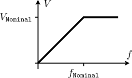

This icon indicates a package containing utility classes.
Extends from Modelica.Icons.UtilitiesPackage (Icon for utility packages).
| Name | Description |
|---|---|
CurrentController | Current controller |
MultiTerminalBox | Terminal box Y/D-connection |
SwitchedRheostat | Rheostat which is shortened after a given time |
SwitchYD | Y-D-switch |
TerminalBox | Terminal box Y/D-connection |
VfController | Voltage-Frequency-Controller |
This is a simple voltage-frequency-controller. The amplitude of the voltage is linear dependent (VNominal/fNominal) on the frequency (input signal u), but limited by VNominal (nominal RMS voltage per phase). An
m quasi static phasor signal is provided as output signal y, representing complex voltages.
The output voltages may serve as inputs for complex voltage sources with phase input. Symmetrical voltages are assumed.
|  |
| Type | Name | Default | Description |
|---|---|---|---|
Integer | m | 3 | Number of phases |
Angle | orientation[m] | -Modelica.Electrical.MultiPhase.Functions.symmetricOrientation(m) | Orientation of phases |
Voltage | VNominal | Nominal RMS voltage per phase | |
Frequency | fNominal | Nominal frequency | |
Angle | BasePhase | 0 | Common phase shift |
| Type | Name | Description |
|---|---|---|
output ComplexOutput | y[m] | Complex quasi static voltages (RMS) |
input RealInput | u | Frequency input (Hz) |
TerminalBox: at the bottom connected to both machine plugs, connect at the top to the grid as usual,
choosing Y-connection (StarDelta=Y) or D-connection (StarDelta=D).
| Type | Name | Default | Description |
|---|---|---|---|
Integer | m | 3 | Number of phases |
String | terminalConnection | Choose Y=star/D=delta |
| Type | Name | Description |
|---|---|---|
PositivePlug | plug_sp | To positive stator plug |
NegativePlug | plug_sn | To negative stator plug |
PositivePlug | plugSupply | To grid |
NegativePin | starpoint |
TerminalBox: at the bottom connected to both machine plugs, connect at the top to the grid as usual,
choosing Y-connection (StarDelta=Y) or D-connection (StarDelta=D).
| Type | Name | Default | Description |
|---|---|---|---|
Integer | m | 3 | Number of phases |
final Integer | mSystems | Electrical.MultiPhase.Functions.numberOfSymmetricBaseSystems(m) | |
final Integer | mBasic | integer(m / mSystems) | |
String | terminalConnection | Choose Y=star/D=delta |
| Type | Name | Description |
|---|---|---|
PositivePlug | plug_sp | To positive stator plug |
NegativePlug | plug_sn | To negative stator plug |
PositivePlug | plugSupply | To grid |
NegativePlug | starpoint |
Switched rheostat, used for starting induction motors with slipring rotor:
The external rotor resistance RStart is shortened at time tStart.
| Type | Name | Default | Description |
|---|---|---|---|
Integer | m | 3 | Number of phases |
Resistance | RStart | Starting resistance | |
Time | tStart | Duration of switching on the starting resistor |
| Type | Name | Description |
|---|---|---|
PositivePlug | plug_p | To positive rotor plug |
NegativePlug | plug_n | To negative rotor plug |
This is a simple current controller.
The desired RMS values of d and q component of the quasi static space phasor current in rotor fixed coordinate system are the inputs id_rms and iq_rms.
Using the given rotor position input phi, the quasi static m phase output currents i[m] are calculated.
The model output can be used to feed a quasi static current source with phase input to supply synchronous machines.
| Type | Name | Default | Description |
|---|---|---|---|
Integer | m | 3 | Number of phases |
Integer | p | Number of pole pairs | |
Angle | gamma0 | 0 | Offset added to electrical rotor angle |
| Type | Name | Description |
|---|---|---|
input RealInput | id_rms | |
input RealInput | iq_rms | |
input RealInput | phi | |
output ComplexOutput | I[m] | Multi phase current phasors |
output RealOutput | gamma | Reference angle of source |
Simple Star-Delta-switch.
If control is false, plug_sp and plug_sn are star connected and plug_sp connected to the supply plug.
If control is true, plug_sp and plug_sn are delta connected and they are connected to the supply plug.
| Type | Name | Default | Description |
|---|---|---|---|
Integer | m | 3 | Number of phases |
| Type | Name | Description |
|---|---|---|
PositivePlug | plugSupply | To grid |
PositivePlug | plug_sp | To positive stator plug |
NegativePlug | plug_sn | To negative stator plug |
input BooleanInput | control[m] |
Generated 2018-10-22 14:46:06 EDT by MapleSim.